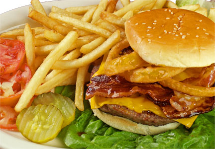

<!--create new ion-view and ion-content to hold template-->
<ion-view>
<ion-content>

 <br/>
 <br/><!--line breaks-->
 <br/>

 <!--button that links back to the home page with its own styling-->
 <div>
  <button class="button button-dark" ui-sref="tabs.home"> 
    Back to home
  </button>
 </div>

 <!--create new div to hold image of the food we are showing info about, give the image some width and height attributes-->  
 <div>
  
 </div>
 
 <!--Form controlled with radio buttons containing different calory sizes for portions, using controller-->
 <form name="FoodForm">
  <input type="radio" ng-model="portion.size" value="360">Small Portion <br/>
  <input type="radio" ng-model="portion.size" value="550">Medium Portion <br/>
  <input type="radio" ng-model="portion.size" value="890">Large Portion <br/>
  <tt>Calories = {{portion.size | json }}</tt><br/><!--output with controller-->
 </form>

</ion-content>
</ion-view><!--close ion view and content-->
